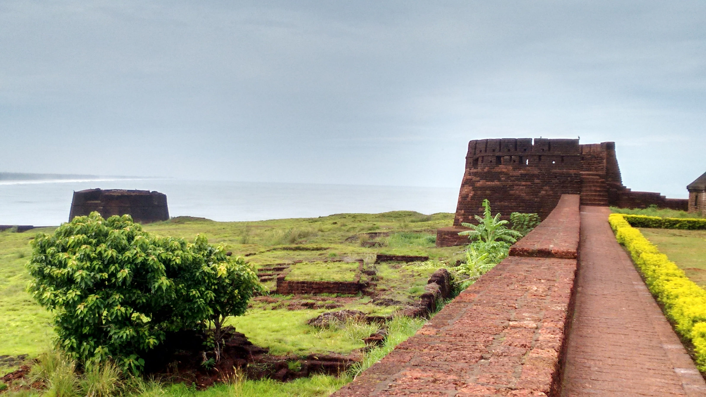
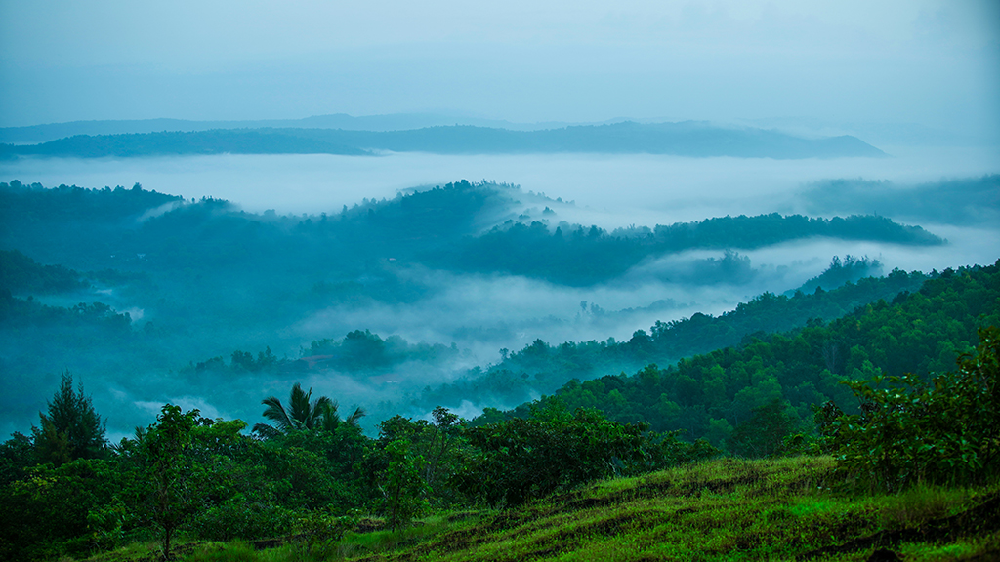
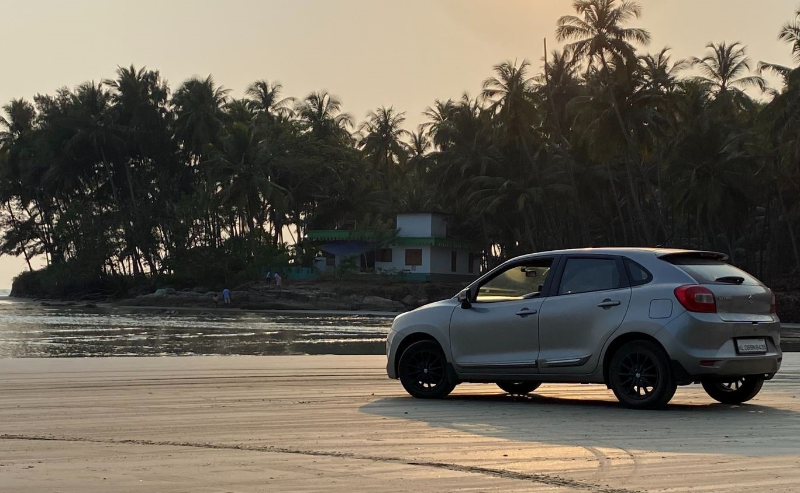
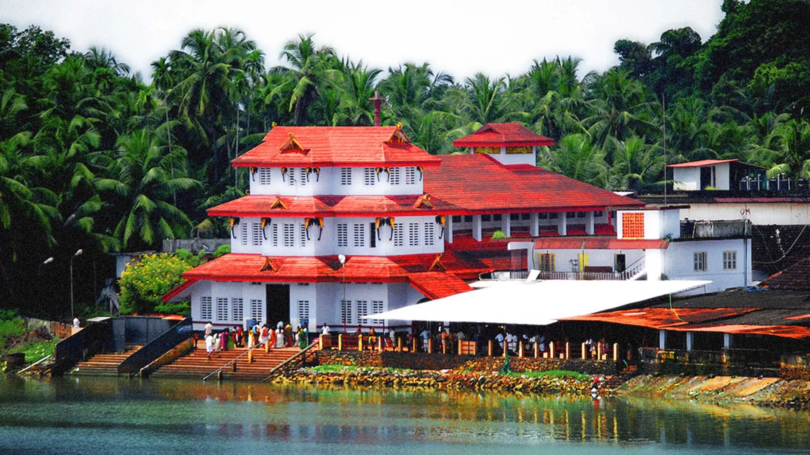
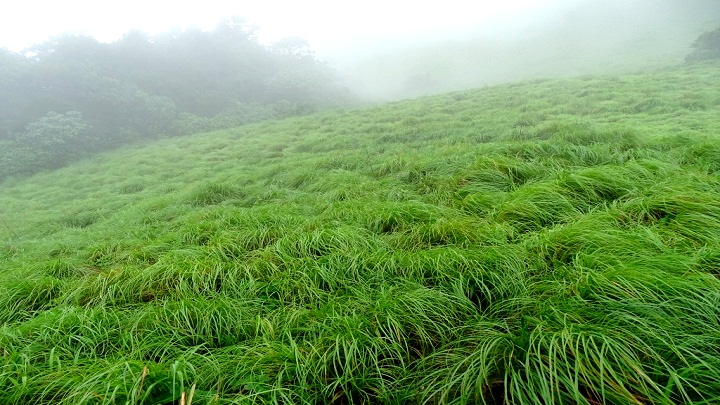

Popular Destinations

Bekal Fort - Kasargod
Spread over 40 acres of land standing the tough trials of the waves is the largest fort in the state of Kerala

Posadi Gumpe - kasargod
The green carpeted meadows, shouldering the distant foggy mountains, and hilltops peeping into the skies!

muzhapilangad Beach - Kannur
The only Drive'n Beach In kerala

Parassini Temple - Kannur
one of Famous Temple in South India

Paithal mala - Kannur
one of Best trecking spots in kerala